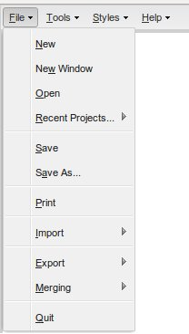
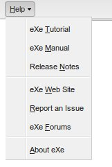
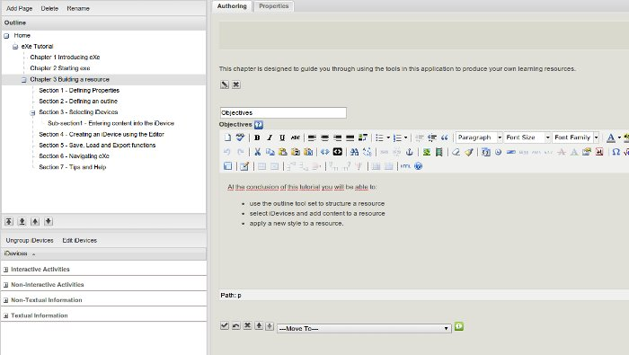
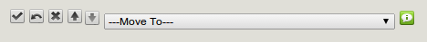

eXeTutorial
Home
Objectives: eXeLearning Tutorial
To quickly introduce the essential elements of eXeLearning, and point you towards additional tutorials & resources that may further guide you in your e-learning endeavors.

If you are already familiar with using eXeLearning, you may skip this introductory tutorial by either:
- Starting a new project (using File->New),
- Opening any existing project (using File->Open),
- or, re-opening a recent one (using File->Recent Projects).

You can always return to this tutorial by selecting
Help->eXe Tutorial.
Preknowledge: nodes and the Outline pane
To begin exploring the introductory tutorial from within eXeLearning, you will need to know how to navigate through its content pages ("nodes") using the eXeLearning Outline pane. This is the part of eXeLearning's graphical user interface that is used to build up the hierarchical structure (the outline) of your content.

First, locate the Outline pane in the top-left section of eXeLearning. It should look something like this:
- You may click on the arrows in the node outline to expand or collapse portions of the outline.
- You may resize the entire Outline pane by dragging either its right or bottom border.
- If a node name does not fit entirely within the Outline pane, you may hover your mouse cursor over the truncated node name to see its entire name.
Next, you may begin clicking on each node of interest to show the node's contents within this pane where you are reading right now, and the largest section of eXeLearning's graphical user interface: the Authoring pane.
Preknowledge: editing content
Since this tutorial is itself an actual eXeLearning project (not an exported package), you may sometimes need to know how to return to preview mode once you find that you have enabled edit mode:

No worries, it's easy enough to get out of the edit mode. Just click on the green check mark on the left to indicate that editing is complete, or the blue arrow on its right to undo any changes that you might have made:

As you will discover later on in the tutorial, edit mode is enabled whenever you double-click within the content, or click on any of the edit icons:
Activity
Now, begin exploring the introductory tutorial from within eXeLearning and navigate its pages via eXeLearning's Outline pane. Drill into each "node", or page, of the tutorial content, and have a play with it at your own pace. Enjoy!
Licensed under the Creative Commons Attribution Share Alike License 4.0